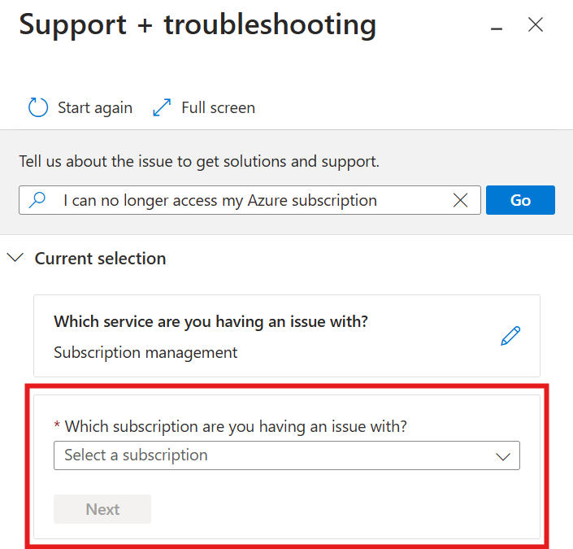

10 Sept 2024
I recently lost access to one of my Azure subscriptions and could no longer see it in the subscription list in the Azure Portal or using the Azure CLI.
Of course you can create a support case from the Azure portal but only you have a subscription. If you don't, you can use the Azure CLI to create it.

Here's how you can create an Azure support case using the Azure CLI:
winget install Azure.CLIaz extensions add --name supportaz loginaz support services list --query "[?contains(displayName, 'Subscription management')].name"az support services problem-classifications list --service-name "[GUID from previous result here]" --query "[?contains(displayName, 'Unable to access my subscription / Issues signing in')].id"az support no-subscription tickets create --ticket-name "CannotAccessSub" --title "I cannot access my subscription" --contact-country "[Your A-3 Country Code]" --contact-email "[Your email address]" --contact-first-name "[Your first name]" --contact-language "en-us" --contact-last-name "[Your last name]" --contact-method "email" --contact-timezone "[Your time zone name]" --description "I can no longer see my Azure subscription listed in the portal or CLI. Sub Name=[Your Sub Name Here] Sub ID=[Your Sub ID Here]" --advanced-diagnostic-consent "Yes" --problem-classification "[The problem classification ID you got earlier]" --severity "minimal"